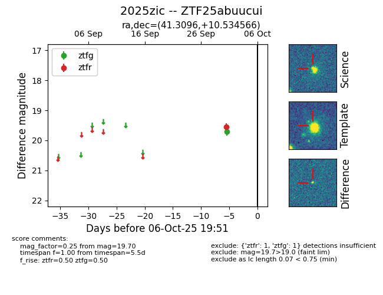

FINK: ZTF25abuucui
Lasair: ZTF25abuucui
ALeRCE: ZTF25abuucui
TNS: 2025zic
YSE: 2025zic
ZTF25abuucui (ztf,fink)
2025zic (tns,yse)
equatorial (ra, dec) = (41.3096,+10.53457)
galactic (l, b) = (162.9978,-43.31035)

last ztfg=19.70, ztfr=19.55
1 ztfg, 1 ztfr detections